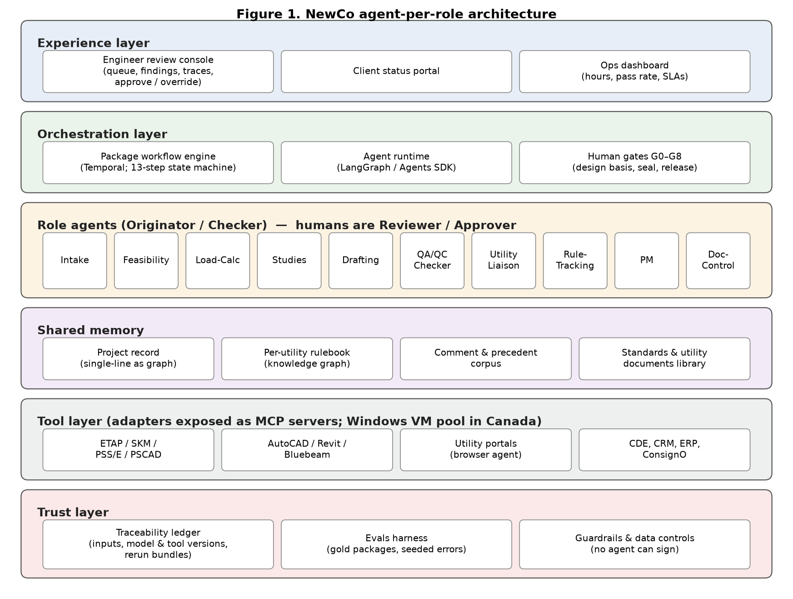

NewCo Build Brief: How to Build an AI-First MV/HV Grid Design Engineering Firm
Prepared for Jorge (Diagram VC), 10 October 2026. Companion to the Idea Memo "NewCo: AI-First MV/HV Grid Design Engineering Firm" (final version, 23 pages). Research and synthesis only; not for circulation.
Reading guide. Section 1 is the one-page summary. Sections 2–3 answer hypothesis 1 (the agent-per-role architecture). Section 4 answers hypothesis 2 (software NewCo buys). Sections 5–6 answer hypothesis 3 (what NewCo builds). Section 7 answers hypothesis 4 (the step-by-step mapping). Sections 8–11 cover the roadmap, team, stack cost and open questions. Section 12 lists what could not be verified.
Sources. Expert calls: Haris Rashid (Pre-Construction Development Lead, TruGrid; EPC/owner side, utility-scale renewables), Sheldon Pinto (Customer Connections Intake Manager, Toronto Hydro; utility side), Pritam Haldar (Co-owner, GridWise Engineering, ex-BC Hydro; consultant side). Vendor capabilities are linked to vendor documentation where possible. Cost figures are estimates unless a source is linked.
NewCo should be built as an engineering firm whose production system is a set of role agents, each mirroring an accountable position in a conventional consulting practice (intake coordinator, design engineer, drafter, checker, utility liaison, project manager, document controller), supervised by licensed engineers who hold the only authority to approve and seal. The organizing rule is the four-level sign-off chain consulting firms already use, Originator, Checker, Reviewer, Approver (OCRA): agents originate and check; human engineers review and approve. This mirrors how utilities, regulators and insurers already think about responsibility, so it explains itself to them.
Five recommendations
Treat each role as an agent deployment, but do not copy the human org chart one-for-one.
Use role agents where accountability matters (who originated, who checked) and shared skill agents (document extraction, CAD scripting, study execution) underneath them. The value of the model is fewer handoffs, not more digital staff.
Buy every engineering calculation engine; build none.
Studies run in the tools utilities already accept: PSS/E (Siemens) for anything the IESO or a transmitter will review, and ETAP or SKM PowerTools for MV distribution studies, arc flash and coordination. ETAP, PSS/E, PSCAD, PowerFactory, CYME and ASPEN OneLiner all publish Python automation interfaces, so agents can drive them natively and leave a model file the engineer can open and rerun, which is exactly what Haris said he needs before signing.
Build four things that are the moat, and little else: (a) the per-utility rulebook and the learning loop that updates it from every comment round; (b) the package checker that runs those rules plus engineering cross-checks; (c) the traceability ledger that ties every number in a sealed package to its inputs, tool versions and model versions; (d) the orchestration layer and engineer review console that let one P.Eng supervise many packages.
Tool adapters, the client status portal, pricing and evals are built too, but they are enabling, not defensible.
Keep the seal physically human.
PEO's digital signature (issued through Notarius) "must remain under the sole control of its holder, it cannot be shared nor delegated under any circumstances" (PEO). Agents never hold signing credentials; the system prepares a signing bundle and the engineer signs in ConsignO. In Québec the bar is higher still: plans not prepared under the engineer's "direction and immediate supervision" cannot be sealed even after detailed review (OIQ), so the engineer must set the design basis at the start, not only review at the end.
Ship a 90-day MVP that covers only Phase 1 steps 0–3 for MV service upgrades at two or three Ontario utilities (Toronto Hydro, Alectra, Hydro One Distribution), with one founding P.Eng, two AI/software engineers and one designer.
Measure engineer hours per package against the memo's ~30% kill line on the 10-package shadow pilot. Add study support, ESA plan review and detailed design (Phase 2) in months 4–12.
What is genuinely uncertain
(i) Whether frontier models can be used with Canadian-only data processing: on AWS Bedrock in Canada, Claude runs only through US or global cross-region inference (AWS), and Azure's Canada regions offer a narrower model set (Microsoft). (ii) Whether utilities' portal terms permit automated submission. (iii) Whether CSA and utility standards can be licensed into the rulebook. (iv) Professional liability insurance cost for an AI-first firm. (v) Actual engineer hours saved, which only the shadow pilot can measure.
Rough cost
Excluding salaries and insurance, the MVP software stack is roughly US$80–200K in year one (our estimate; most engineering software is priced by quote). People dominate: the 90-day team is about five people; the 12-month team about ten to twelve.
Section 2
Design constraints
These come from the expert calls and from the professional rules, and every architectural decision below traces back to one of them.
Constraint
Source
Architectural consequence
Full traceability of "every input assumption result"; no "black box" study
Expert call Haris Rashid (TruGrid)
Traceability ledger; every output carries its lineage
Results must come from validated tools "as established as PSCAD, ETAP and PSSE"
Expert call Haris Rashid
Agents drive the incumbent tools; NewCo does not write its own solvers
The engineer must be able to "independently run or rerun the critical cases"
Expert call Haris Rashid
Every study ships with a rerun bundle: native model file, case settings, script
Must apply utility-specific compliance (e.g., ERCOT) and flag overloads, voltage violations, fault-level exceedances
Expert call Haris Rashid
Per-utility rulebook; deterministic violation checks on study outputs
"When I open the study, I understand exactly which network model was used, which assumptions were made, how the conclusions were reached"
Expert call Haris Rashid
Assumption register and decision log per package, shown in the review console
AI is fine for screening, application prep, drawing checks and comment resolution today; studies later
Expert call Haris Rashid
Phase 1 automation targets documents first, studies second
"Actual design submissions and studies… will have to be done by the engineers"
Expert call Pritam Haldar (GridWise)
Studies are engineer-directed; agents prepare and execute cases, engineers decide
Engineers spend 30–40% of the day on communication; no shared tracker
Expert call Sheldon Pinto (Toronto Hydro)
Status tracker and client portal; utility-liaison agent owns correspondence
Generic checklists; missing drawings surface late
Expert call Sheldon Pinto
Requirement assembly from rulebook before drafting starts
PEO digital signature cannot be shared or delegated
Independent checker on P&C deliverables; settings-file verification in Phase 2
Section 3
Agent-per-role architecture
A conventional connection-engineering practice has a small set of roles that hand work to each other: an intake or proposal coordinator, a project manager, design engineers by discipline (power systems, substation, protection and control), drafters, a checker, a utility liaison (often the design engineer), a document controller, and the engineer of record who seals. NewCo keeps those roles as the unit of accountability and implements each as an agent deployment: a defined job description (system instructions), a set of permitted tools, a scope of data access, an authority level, and a human counterpart who supervises it.
Two adjustments to the "one employee, one agent" idea make it work in practice.
Role agents and skill agents are different things. Role agents own a deliverable and are named in the audit trail (for example, "Load-Calc Agent originated calculation LC-003 rev B"). Skill agents are shared capabilities that any role agent can call: reading a scanned single-line, running a PSS/E case, generating an AutoCAD drawing, filling a web form. Skills are reused across roles; roles are not merged.
Remove handoffs instead of digitizing them. In a human firm, the drafter waits for the engineer and the engineer waits for the checker. In NewCo, the orchestrator runs originator and checker in minutes, and the human queue holds only what needs judgment. The org chart is a responsibility map, not a workflow.
Layered architecture (click any box for detail)
Experience layer
drives
Orchestration layer
runs and gates
Role agentsOriginator / Checker — humans are Reviewer / Approver
read / write ↕
Shared memory
call tools via adapters
Tool layeradapters exposed as MCP servers; Windows VM pool in Canada
every call logged to ledger
Trust layer
Built by NewCo (moat or core component) · Role agents originate and check; humans review, approve and seal.
flowchart TB
subgraph EXP[Experience layer]
RC[Engineer review console]
CP[Client status portal]
OPS[Ops dashboard: queue, hours, pass rate]
end
subgraph ORC[Orchestration layer]
WF[Package workflow engine - Temporal]
RT[Agent runtime - LangGraph or Agents SDK]
GATE[Human gates G0-G8]
end
subgraph AG[Role agents]
A1[Intake]
A2[Feasibility]
A3[Load-Calc]
A4[Studies]
A5[Drafting]
A6[QA/QC Checker]
A7[Utility Liaison]
A8[Rule-Tracking]
A9[PM]
A10[Doc-Control]
end
subgraph MEM[Shared memory]
PR[Project record - structured data model]
RB[Per-utility rulebook - knowledge graph]
CC[Comment and precedent corpus]
ST[Standards and utility documents library]
end
subgraph TL[Tool layer - adapters exposed as MCP servers]
T1[ETAP / SKM / PSS-E / PSCAD]
T2[AutoCAD / Revit / Bluebeam]
T3[Utility portals via browser agent]
T4[CDE, CRM, ERP, ConsignO]
end
subgraph TR[Trust layer]
LED[Traceability ledger]
EV[Evals harness - gold packages]
GR[Guardrails, permissions, data controls]
end
EXP --> ORC
ORC --> AG
AG <--> MEM
AG --> TL
AG --> LED
ORC --> LED
EV -.-> AG
RC --> GATE
Rendered with mermaid.js from the CDN; if offline, the source is shown as text.

The digital org chart
Human role today
NewCo agent
What it does
Main tools
Authority
Human counterpart
Intake / proposal coordinator
Intake Agent
Qualifies the request, identifies utility and service, collects documents, drafts scope and fee
CRM, email, pricing engine
Originator (proposal)
Principal / PM
Existing-conditions technician
Records Agent (skill)
Extracts data from as-builts, nameplates, bills, interval data, photos
Document AI, vision models
Originator (data)
Design engineer
Feasibility engineer
Feasibility Agent
Capacity and constraint screen; options memo
Utility capacity data, GIS, IESO and utility planning documents
Originator
P.Eng (power)
Load-calculation engineer
Load-Calc Agent
OESC Section 8 demand calculation, growth scenarios, service sizing
Calculation engine, rulebook
Originator
P.Eng / EIT
Power systems engineer
Studies Agent
Builds and runs short-circuit, load-flow, arc-flash and coordination cases
ETAP or SKM; PSS/E; PSCAD later
Originator of cases; never author of conclusions
P.Eng (studies)
Drafter / designer
Drafting Agent
Single-lines, site plans, layouts and schematics from the project data model
Each engagement is a long-running package workflow (weeks to years) with a state machine that follows the 13 steps: intake, screening, concept, application, comment rounds, study support, offer, detailed design 30/60/90, approvals, IFC, construction support, commissioning, close-out. Two layers are needed.
Durable workflow engine. Packages wait months for utility responses and days for human approvals; they must survive restarts and resume exactly where they stopped. Temporal is the standard open-source choice for durable, long-running workflows with timers, retries and external signals (a human approval is a signal). It can be self-hosted in a Canadian region. Recommendation: use Temporal from day one; a home-grown state table in Postgres works for the MVP but is usually rewritten.
Agent runtime. Inside each workflow step, an agent loop (plan, call tools, verify, return) runs under a framework. Options: LangGraph (model-agnostic graphs with checkpointing), the OpenAI Agents SDK (handoffs, guardrails, tracing) and the Claude Agent SDK (an agent loop with tools, permissions, hooks, MCP and sub-agents). Recommendation: keep the runtime model-agnostic (LangGraph or a thin in-house loop), because the checker should use a different model family from the originator and because data-residency rules may force a specific provider.
Rules for the orchestrator: agents cannot advance a package past a human gate; every agent call is idempotent and logged; every step has a service-level timer (for example, "utility response overdue at 15 business days: PM Agent drafts a follow-up for engineer approval").
3.6 Shared memory: four stores
Four stores, each with a different shape.
Project record (relational, Postgres). The single source of truth for a package: site, utility, service, loads, equipment list, the single-line as a graph of buses, transformers, breakers and relays, study cases and results, drawings and revisions, submissions, comments, approvals. Drawings and study inputs are generated from this record, not the other way round, so a change propagates everywhere and the checker can trace it. Haris described this need: AI should "identify the design changes that have affected the calculations."
Per-utility rulebook (knowledge graph, for example Neo4j or typed Postgres tables). Each requirement is an object: the text, its source document and clause, version and effective date, applicability conditions (utility, voltage class, service type, load size), the check logic (deterministic where possible), the evidence a package must contain, and its provenance (published standard, utility comment on a named project, or engineer judgment). Requirements link to the comments that created or confirmed them.
Comment and precedent corpus (documents plus a vector index such as pgvector). Every utility and ESA comment received, the response, the outcome, and the final accepted packages. Used for retrieval ("how did we answer Toronto Hydro on metering-cabinet location last time?") and to train the comment classifier. Pritam suggested a public-data variant: running 20–30 of a utility's published conceptual and feasibility reports through AI to learn where capacity exists and how the utility responds.
Standards and utility documents library. Utility connection standards and guides, ESA bulletins, OEB codes, IESO market manuals, and the codes NewCo is licensed to use. Licensing caveat: the OESC (CSA C22.1 with Ontario amendments) and other CSA standards are copyrighted, so ingesting their full text into a model-accessible store needs a licence. CoLab's July 2026 licence of ISO standards through the Standards Council of Canada is the nearest precedent (per the T&D QA/QC knowledge file). Until licensed, the rulebook stores NewCo's own check logic with clause references, not the code text.
3.7 Tool layer and how agents drive each tool
Agents should drive software in this order of preference, because each step down is less reliable and less auditable:
Native API or Python interface (ETAP etapPy and etapAPI, PSS/E psspy, PSCAD Automation Library, PowerFactory Python, CYME CymPy, ASPEN OlxAPI; Procore, Bluebeam, Deltek, BQE, HubSpot, DocuSign and ConsignO REST APIs).
Official MCP server (Autodesk's Revit MCP server, in tech preview; Autodesk's Fusion servers).
Scripting inside the desktop application (AutoLISP or .NET for AutoCAD Electrical; SESScript for CDEGS; XGSLab macros).
File exchange (generate the tool's import file, for example ETAP or SKM data imports, DXF).
Screen-based computer use (utility web portals; tools with no interface). Use only with a human confirmation before any irreversible action such as "Submit".
Each tool is wrapped once in an adapter that exposes typed operations (for example, run_short_circuit(case_id) returning results plus a model-file hash) as an MCP server. Agents never call vendor APIs directly; the adapter enforces permissions, logs every call to the ledger and pins the tool version. Most engineering tools are Windows desktop applications with node-locked or network licences, so the tool layer runs on a pool of Windows virtual machines in a Canadian cloud region, with licence servers, reached through the adapters.
3.9 Traceability ledger: what makes a package signable
An append-only record, one entry per agent action and per human decision, containing: the package and step; the agent role and version (instructions hash); the model provider, model identifier and version; the tool, tool version and licence instance; hashes of every input file and data record; the output and its hash; checks run and findings; and the human who reviewed or approved, with timestamp and reason. From the ledger NewCo generates two artefacts per sealed deliverable:
Calculation trace: for each number in the package (for example, available fault current at the main breaker), the chain of inputs, assumptions and tool runs that produced it, readable by an engineer in the review console.
Rerun bundle: the native model files (ETAP project, PSS/E case and scripts, PSCAD workspace), case definitions and the script that reproduces each result, so the engineer can rerun critical cases independently, which is Haris's third condition.
The ledger also serves the insurer and the regulator: it documents supervision, which is the first question both will ask.
3.10 Evals
The evals harness runs before any agent or model change reaches production.
Gold packages: 20–50 completed, utility-accepted packages per utility and request type (from the founding engineers' past work, with client permission, and from the shadow pilot), with known-correct outputs.
Seeded-error sets: gold packages with deliberately injected errors (CT ratio mismatched between SLD and relay schedule, service undersized against the load calculation, missing ground-fault protection, wrong utility template). These measure checker recall and false-positive rate. ESA's February 2026 toolbox talk lists recurring late-caught errors (omitted ground-fault protection, undersized fire-pump and EVSE services) that make good seeds (per the knowledge file).
Comment prediction: on held-out historical submissions, does the checker predict the comments the utility actually raised?
Study agreement: agent-run cases and engineer-run cases in the same tool must match exactly; any difference is a set-up error, not a tolerance question.
Business metrics: engineer hours per package, comment rounds, first-time-complete rate per utility, cycle time.
Tools: LangSmith or Braintrust for tracing and evaluation runs; both are commodity, so choose on data-residency terms.
3.11 Security and data handling
Data classes: client confidential (drawings, load data); utility confidential (system models and short-circuit data supplied under NDA; transmission data can be sensitive critical-infrastructure information); personal information (minimal); NewCo IP (the rulebook).
Model access: enterprise API contracts with zero data retention and no training on inputs, which is the OIQ guide's specific concern.
Residency: hosting, storage and logs in a Canadian region are straightforward. Model inference in Canada is the constraint. On AWS Bedrock, Claude in ca-central-1 runs only through US or global cross-region inference, while stored data stays in Canada (AWS). Azure's Canada regions offer a limited set of models on in-region deployments (Microsoft Q&A), and Canada East is not part of Azure's US data zone (Microsoft Learn). Recommendation: classify data so that utility system models and anything under a residency clause are processed only by tool adapters (deterministic code running in Canada) or by in-region models, and confirm with the first utility and clients what cross-border inference they accept. This is an open question, not a solved one.
Tenant isolation per client; role-based access per agent (the Drafting Agent cannot read invoices; no agent can sign).
Certifications: SOC 2 Type II is a year-two item. ISO 9001 quality management matters more to engineering clients and utilities, and the OCRA ledger is the evidence an ISO auditor asks for.
3.12 How one engineer supervises N agents
The engineer's day is a queue, not a set of open files. The review console orders work by risk and deadline and shows, for each item, what changed, the checker's findings, the calculation trace for key numbers, and the rulebook items applied. Supervision is tiered:
Always reviewed in full: design basis, protection settings, study conclusions, anything sealed.
Reviewed by exception: drawings and forms where the checker reports no findings; the engineer samples a fixed share and reviews all findings.
Released without review after a measured track record: internal status updates and document requests.
Capacity arithmetic for planning (illustrative; to be replaced by pilot data): Pritam estimated 150–400 engineer hours for a feasibility-stage package and 700–1,000 hours to the facility study for a large building. If agents prepare 70–80% of the documentation (Haris's estimate) and engineers spend their remaining time on review and judgment, one P.Eng carrying three to four times today's package load is the planning case. The memo's kill line (NewCo needing more than about 30% of incumbent engineer hours) is the test.
3.13 The learning loop
Every comment round improves the rulebook.
Capture: the Utility Liaison Agent ingests the comment letter or markup (Bluebeam markups through the Studio API).
Classify: by discipline, by type (missing document, format, technical deficiency, new requirement, clarification) and by root cause (NewCo error, unwritten utility requirement, changed requirement, reviewer preference).
Map: link to an existing rule (the rule failed or evidence was missing) or propose a new rule with applicability conditions.
Validate: the rulebook owner (a senior P.Eng) accepts, edits or rejects the proposed rule; accepted rules receive a version and effective date.
Apply: the checker runs the new rule on every live package for that utility; the Rule-Tracking Agent flags affected packages to their engineers.
Measure: first-time-complete rate and comment rounds per utility and rule category over time, the metric the memo's Defensibility section proposes.
Haris described TruGrid's internal copilot doing steps 1 and 2 ("extract the comments and then characterizing them by discipline and then identifying any recurring issues"). The difference at NewCo is steps 3 to 5: each comment becomes an enforced check on the next package.
Section 3.3
OCRA sign-off chain
Engineering firms commonly record four levels on every deliverable: Originator (prepared), Checker (checked), Reviewer (reviewed), Approver or Authorizer (approved for issue). NewCo maps them as follows.
1
Originator
Agent Role agent
Must cite every input it used; output is a draft until checked
2
Checker
Agent QA/QC Checker Agent plus deterministic rules
Must be independent of the originator: separate context, separate instructions, preferably a different model family, and deterministic rule checks that do not depend on a model at all. A model checking its own work is not a check.
3
Reviewer
Human Human discipline engineer (P.Eng, or EIT under supervision)
Reviews the findings list and samples the work; resolves or overrides every finding with a recorded reason
4
Approver / Authorizer
Human Human P.Eng (engineer of record)
Approves the design basis at kickoff and the package at issue; applies the seal personally
agents originate and checkengineer reviews, approves, seals
This structure also addresses the Québec direction-and-supervision test: the engineer sets direction at the design-basis gate and supervises through the review queue as work proceeds, rather than reviewing a finished product. Whether that satisfies the OIQ's "immediate supervision" standard for agent-originated drawings is a practice question to put to the OIQ (ia@oiq.qc.ca is the contact listed for its AI guide) before NewCo seals in Québec.
Human-in-the-loop gates (G0–G8)
G0
Engagement
Before work starts · Principal
Scope, fee, conflict check, client data terms
G1
Design basis
Start of step 1 · Engineer of record
Assumptions, applicable codes and utility standards, design criteria. This is the "direction" gate.
G2
Concept
End of step 1 · Engineer of record
Service voltage, configuration, sizing
G3
Submission
Step 2, and each resubmission in step 3 · Engineer of record
Beyond these gates, in the first year any agent action that leaves the company (an email to a utility, a portal submission, a client deliverable) requires a human release. This can be relaxed for low-risk categories (status replies, document requests) once error rates are measured.
Section 4
Software stack
Drive-mode key: API = documented programmatic interface; MCP = official MCP server; Script = in-application scripting; File = import/export; Screen = computer use. Cost signals are estimates unless linked.
Drive mode:
Power system analysis
API
ETAP
Role at NewCo
MV/LV studies: short circuit, load flow, arc flash, coordination, motor starting, harmonics
How agents drive it
API: etapPy Python API and etapAPI REST service; studies can run remotely and in parallel (etapPy, etapAPI)
Maturity / notes
Industry standard for industrial and commercial MV; named by Haris
Cost signal
Quote-based and modular; five figures USD per seat-year for a study bundle is a planning figure (unverified)
Recommendation Primary MV study tool (choose ETAP or SKM for the MVP, not both)
Power system analysis
File
SKM PowerTools
Role at NewCo
Same MV/LV scope; common among North American consultants
How agents drive it
File / limited: an Automation Pack and XML data exchange are documented; no public REST API found (SKM FAQ)
Maturity / notes
Mature
Cost signal
Generally cheaper than ETAP (unverified)
Recommendation Alternative if the founding engineers use it; weaker for agents
Power system analysis
None found
EasyPower
Role at NewCo
Same scope
How agents drive it
No official public API found; only an unofficial reverse-engineered library
Maturity / notes
Mature
Cost signal
Quote
Recommendation Not recommended for an agent-first stack
Power system analysis
API
Siemens PSS/E
Role at NewCo
Transmission-level load flow and short circuit; data for IESO SIA and transmitter CIA. Pritam: BC Hydro requires PSS/E files at feasibility and SIS stages
How agents drive it
API: psspy Python module with an extensive documented API (Siemens)
Maturity / notes
Utility standard
Cost signal
Quote; expensive
Recommendation Required for HV and transmission connections (step 4 support; new large loads)
Power system analysis
API
PSCAD (Manitoba Hydro International)
Role at NewCo
Electromagnetic transient studies when required at SIS stage (Pritam)
How agents drive it
API: Automation Library in Python, free to licensed users (PSCAD)
Maturity / notes
Standard for EMT
Cost signal
Quote
Recommendation Later (large loads, generation, storage)
Power system analysis
API
DIgSILENT PowerFactory
Role at NewCo
Alternative transmission and distribution platform
How agents drive it
API: Python with full data-model access (DIgSILENT)
Maturity / notes
Strong outside North America
Cost signal
Quote
Recommendation Only if a target utility requires it
Power system analysis
API
Eaton CYME
Role at NewCo
Utility distribution analysis, used by many Canadian distributors
Recommendation Phase 2, if a utility asks for OneLiner files
CAD, drawings and models
ScriptAPI
AutoCAD with Electrical toolset
Role at NewCo
Single-lines, schematics, site plans, panel layouts; the format utilities expect (Pritam: "for single line diagram, generally AutoCAD")
How agents drive it
Script/API: AutoCAD Electrical API through AutoLISP, .NET or C++ (Autodesk); headless AutoCAD through APS Design Automation (Autodesk), not documented for Electrical-specific functions. An Autodesk AutoCAD MCP server is reported as a read-only tech preview tied to Autodesk Assistant (third-party report, unverified)
Maturity / notes
The Electrical toolset is included in the AutoCAD subscription (Autodesk)
Cost signal
About US$2,690 per seat-year (Vendr listing, unverified)
Recommendation Primary drafting tool; generate drawings from the project record by script
CAD, drawings and models
MCP
Autodesk Revit
Role at NewCo
Building-integrated electrical design for large buildings and data centres; rarely needed for utility applications
How agents drive it
MCP: official Revit Public MCP Server, tech preview for Revit 2027; reads models and makes bulk parameter edits (Autodesk)
Maturity / notes
Mostly the building engineer's tool
Cost signal
Subscription
Recommendation Phase 2, for coordination with building design teams
CAD, drawings and models
None found
Bentley (OpenUtilities Substation, MicroStation)
Role at NewCo
Substation physical design; used by some utilities
How agents drive it
SDKs exist (not verified for this brief)
Maturity / notes
Relevant if a utility mandates Bentley formats
Cost signal
Quote
Recommendation Only on demand
CAD, drawings and models
API
Bluebeam Revu / Studio
Role at NewCo
PDF markup, review sessions, comment capture
How agents drive it
API: Studio Markups API (OAuth) for reading markup data (Bluebeam)
Maturity / notes
Ubiquitous in North American AEC review
Cost signal
Roughly US$260–440 per user-year (unverified)
Recommendation Use for review and comment intake
Grounding
Script
SES CDEGS
Role at NewCo
Substation grounding grids, step and touch voltages (IEEE 80)
Notarius CertifiO with ConsignO (Desktop or Cloud)
Role at NewCo
Digital seal
How agents drive it
API: ConsignO Cloud REST API creates and tracks signing workflows (Notarius); the engineer signs personally
Recommendation PEO selected Notarius as its digital-signature provider (PEO) but endorses no specific product (PEO seal guideline). The OIQ partners with Notarius and expects a Notarius-type digital signature plus the seal image (OIQ, aide-mémoire). Use Notarius in both provinces.
Recommendation Engagement letters and client acceptances, not the engineering seal. Sheldon noted that document signing takes one to three weeks today.
Utility and authority portals (Ontario)
Screen
Toronto Hydro New Service Installation Request online form
Role at NewCo
Commercial new service and upgrade requests with site plan, drawings, permits and load calculations (Toronto Hydro)
How agents drive it
Screen (browser automation)
Maturity / notes
Toronto Hydro says the offer or quotation follows complete information, in up to 60 days
Utility and authority portals (Ontario)
Screen
Alectra New Connections Portal
Role at NewCo
Commercial new service, upgrades, temporary service (Alectra)
How agents drive it
Screen
Utility and authority portals (Ontario)
Screen
Hydro One Distribution
Role at NewCo
Online connection form, NCCI form, SLD and primary-fusing data; Large Customer Contact Form for loads of 2 MVA or more (Hydro One)
How agents drive it
Screen and email
Maturity / notes
Manual protection review on Hydro One's side
Utility and authority portals (Ontario)
Docs
Hydro One Transmission
Role at NewCo
Seven-phase load connection process; CIA (Hydro One)
How agents drive it
Email and documents
Maturity / notes
P&C settings reviewed by Hydro One at least four months before in-service; drawings stamped by a P.Eng (PP-40000-004)
Utility and authority portals (Ontario)
Docs
IESO connection assessment
Role at NewCo
SIA for larger connections; for loads over 10 MW it "may take up to 150 days" (knowledge file) (IESO)
How agents drive it
Documents and forms
Maturity / notes
NewCo supplies data and models; the IESO runs the study
Utility and authority portals (Ontario)
Screen
ESA Electronic Plan Review
Role at NewCo
Mandatory for three-phase services of 400 A or more, feeders over 1,000 A and installations over 750 V; submissions missing information for 10 business days are cancelled (ESA)
How agents drive it
Screen
Maturity / notes
ESA "does not approve designs or replace a P.Eng"
AI platform
Two providers under enterprise terms (one to originate, one to check)
Role at NewCo
Frontier models
Maturity / notes
Residency constraints in 3.11; zero data retention required
Recommendation Alternatives: Anthropic, OpenAI, Google, directly or through AWS Bedrock or Azure
AI platform
LangGraph or a thin in-house loop
Role at NewCo
Agent runtime
Maturity / notes
Keep model-agnostic
Recommendation Alternatives: OpenAI Agents SDK; Claude Agent SDK
Reading text, tables and title blocks is mature; reliably rebuilding single-line topology from a scan is not, so a human verifies extracted topology (our assessment)
AWS ca-central-1 or Azure Canada Central/East, with a Windows VM pool for engineering tools
Role at NewCo
Cloud
Maturity / notes
Licence servers for ETAP, PSS/E and AutoCAD run inside the private network
Recommendation Alternatives: —
Judgment on solvers (4.1)
Judgment: utilities accept results from these tools because the engineering community trusts them. NewCo gains nothing by building its own solver and would lose the condition Haris put first.
Portals are the least automatable layer (4.5)
Portals are the least automatable layer: no published APIs were found for any of them. Browser agents can fill forms and upload files, but terms of use, applicant credentials and CAPTCHAs need checking portal by portal, and a human confirms every submission. The OEB's proposed standard Load Customer Connections Procedure (memo, Timing) may standardize content; it is unlikely to deliver APIs soon.
Grounding is low-volume in Phase 1 (MV service upgrades rarely need a new grid study), so neither tool is needed for the MVP.
Section 5–6
Build vs buy
The four moat components (recommendation 3 in the executive summary, decisions in section 5). Their "why" text is quoted from the build-versus-buy table.
1
B3 · B4
Per-utility rulebook + learning loop
No one on the applicant side holds it; it compounds with every package.
2
B5
Package QA/QC checker
Encodes the rulebook; generic checkers exist (CoLab for mechanical drawings) but not for utility connection packages.
3
B6
Traceability ledger + rerun bundles
Lets an engineer sign and an insurer underwrite; specific to NewCo's workflow.
4
B1 · B8
Orchestration layer + engineer review console
Determines engineer leverage, which decides venture versus services economics.
Component
Decision
Why
Power system solvers (load flow, short circuit, arc flash, EMT)
Buy
Utilities and engineers trust established tools; validation is the product; building would take years with no acceptance
Automated proposals with impact analysis on live packages
B5
Package QA/QC checkermoat
Runs rules and consistency checks (SLD against load calculation, equipment schedule and forms)
Completeness and consistency checks for application packages
Study-output checks (violations, ratings), drawing cross-references, relay settings against the coordination study
B6
Traceability ledgermoat
Append-only lineage of every action and decision; calculation trace; rerun bundles
Ledger and trace for load calculations, drawings and submissions
Rerun bundles for ETAP and PSS/E studies; exports for insurers and auditors
B7
Tool adapters
MCP servers wrapping vendor tools
ETAP or SKM, AutoCAD (scripted), Bluebeam, SharePoint, one portal
PSS/E, PSCAD, CDEGS or XGSLab, Procore/ACC, all target portals, ConsignO workflow
B8
Engineer review consolemoat
Risk-ordered queue, findings, traces, approve or override with reason
Queue, change view, findings, approve and release
Sampling policy, workload balancing, metrics per engineer
B9
Evals harness and gold packages
Regression testing of agents and models
20 gold packages, 100 seeded errors
200+ gold packages across utilities; continuous evaluation
B10
Pricing and estimation engine
Fixed fee per package from scope features and historical hours
Spreadsheet model calibrated on pilot data
Data-driven estimator; margin tracking per package
B11
Client portal and status tracker
Real-time status, document requests, approvals
Read-only status page and document upload
Client approvals, invoices, utility milestones
Section 7
13 steps · 32 sub-tasks
A note on "30 steps". The memo's process table has 13 steps, numbered 0 to 12 (six in Phase 1, seven in Phase 2). This brief breaks those 13 steps into 32 concrete sub-tasks, so the mapping is at the level of work an engineer or agent actually performs.
Readiness ratings: High = agents can originate most of the work today under human review; Medium = agents assist and the engineer makes the key judgments; Low = engineer-led, agents handle documentation only. Ratings cite the expert calls where possible; the rest are our assessment.
High · 15
Medium–High · 3
Medium · 12
Low–Medium · 2
Summary of readiness across the 32 sub-tasks: 15 High (four of them High only for document assembly, with the seal or technical response remaining human), 3 Medium–High, 12 Medium and 2 Low–Medium. The document-intensive sub-tasks in Phase 1 are where the agents earn their keep first, consistent with Haris's ranking; studies, substation, grounding and protection remain engineer-led with agent support.
Show readiness:
Phase 1: where NewCo wins (steps 0–5; 16 sub-tasks)
0Site and feasibility screening3 sub-tasks
What it is: before an owner commits, establish where and how the site can connect, how much capacity is available, which station and feeder serve it, what constraints exist and what upgrades are likely. Why it exists: it is the owner's go/no-go and sets the budget; the memo makes it the entry service. Who does it today: a consulting engineer, sometimes the owner's engineer or the EPC; Pritam estimated 150–400 hours at feasibility stage on large projects (BC experience). Inputs: site address, existing service records, load intent. Output: a feasibility memo with options and risks. Ontario touchpoints: preliminary consultation with the local distributor (one of the four OEB-timed steps, per the memo); Hydro One for larger loads; IESO and regional planning documents for capacity.
0.1Intake and scopingHigh
What it is; deliverable
Qualify request; identify utility, service and deadline; scope and fixed fee
Agent(s)
Intake, PM
Off-the-shelf tools
HubSpot, email, SharePoint
Built components
B10, B1, B11
Human gate
G0 principal
Key risk
Mis-scoping a fixed fee
Readiness today
High: structured triage
0.2Existing-conditions captureMedium
What it is; deliverable
Extract data from as-built SLDs, nameplates, bills, interval data and photos; existing-conditions summary
Agent(s)
Records (skill)
Off-the-shelf tools
Vision models, OCR
Built components
B2, B6
Human gate
Engineer verifies extracted topology
Key risk
Wrong existing data propagates into every later step
Readiness today
Medium: text and tables are reliable; SLD topology from scans needs verification (our assessment)
0.3Capacity and constraint screenHigh
What it is; deliverable
Nearby stations and feeders, available capacity, constraints, likely upgrades; options memo
Agent(s)
Feasibility
Off-the-shelf tools
Utility capacity data, IESO and regional planning documents, GIS; siting data vendors later
Built components
B3, B2
Human gate
P.Eng reviews memo
Key risk
Distribution-level capacity data is thin; answers can look more precise than they are
Readiness today
High: Haris calls pre-application screening "very, very high value for AI"; Pritam sees AI helping with siting
1Load sizing and concept design3 sub-tasks
What it is: calculate demand under the Ontario Electrical Safety Code (Section 8 demand factors) and the owner's growth plan, then choose service voltage and configuration and draw the concept single-line. Why: utilities size supply and quote from the customer's load and configuration. Who today: consulting engineer and drafter. Outputs: load calculation, concept SLD, preliminary equipment sizing. Touchpoints: the distributor's service standards (service voltage options, metering arrangements).
1.1Load calculationHigh
What it is; deliverable
OESC Section 8 demand calculation; growth scenarios; service size
Agent(s)
Load-Calc
Off-the-shelf tools
Calculation engine
Built components
B3, B5, B6
Human gate
G1 design basis; P.Eng review
Key risk
Code interpretation errors; licensing of code text
Readiness today
High: deterministic once inputs are right
1.2Concept single-line and configurationMedium–High
What it is; deliverable
Service voltage, configuration options, concept SLD
Agent(s)
Drafting, Feasibility
Off-the-shelf tools
AutoCAD Electrical (scripted)
Built components
B2, B7
Human gate
G2 concept
Key risk
Configuration is a judgment call
Readiness today
Medium–High
1.3Preliminary short circuit and sizingMedium
What it is; deliverable
Preliminary fault levels and equipment ratings
Agent(s)
Studies
Off-the-shelf tools
ETAP or SKM (scripted)
Built components
B7, B6
Human gate
P.Eng review
Key risk
Wrong assumed utility fault levels
Readiness today
Medium: tool runs are deterministic; utility source data is often missing
2Utility application3 sub-tasks
What it is: assemble and submit the connection request: forms, single-line, site plan, equipment data, load calculation, protection data and the engineer's stamp. Who today: a consulting engineer or licensed electrical contractor; Sheldon described consultants submitting through Toronto Hydro's website, followed by technical triage by his team. Touchpoints: Toronto Hydro online form; Alectra portal; Hydro One online form and NCCI form.
2.1Requirement assemblyHigh
What it is; deliverable
Utility-specific checklist for this request type, built before drafting
Agent(s)
Utility Liaison, Checker
Off-the-shelf tools
—
Built components
B3, B5
Human gate
—
Key risk
Incomplete rulebook for a new utility
Readiness today
High: Haris calls for utility-specific templates and mandatory checklists; Sheldon for checklists customized by project type
2.2Package draftingHigh
What it is; deliverable
Application SLD, site plan, equipment data sheets, protection data
Agent(s)
Drafting, Load-Calc
Off-the-shelf tools
AutoCAD, Bluebeam
Built components
B2, B7, B6
Human gate
—
Key risk
Inconsistency across drawings
Readiness today
High: Haris estimates AI could prepare 70–80% of the documentation
2.3Forms, seal and submissionHigh
What it is; deliverable
Utility forms filled from the project record; package sealed; portal submission
Agent(s)
Utility Liaison, Doc-Control
Off-the-shelf tools
Utility portals (screen), ConsignO
Built components
B5, B7, B8
Human gate
G3 EOR seals and releases
Key risk
Portal terms of use; brittle automation
Readiness today
High for forms (Haris: AI can "populate the utility forms, flag any missing documents"); submission needs human confirmation
3Completeness review and comment rounds3 sub-tasks
What it is: respond to the utility's completeness review and technical comments until accepted. Why it matters: comments arrive in stages and new requirements can appear after earlier ones close (Haris); a drawing requested late can cost another four months (Sheldon); limited changes can restart the assessment (OEB, per the memo).
3.1Pre-submission QA/QCHigh
What it is; deliverable
Rulebook and consistency check; findings report
Agent(s)
Checker
Off-the-shelf tools
—
Built components
B5, B3, B9
Human gate
Reviewer resolves findings
Key risk
False confidence if checker recall is not measured
Readiness today
High: Haris rates drawing checks and rule-based compliance checks as highly feasible
Responses that commit to design changes without engineering judgment
Readiness today
High: Haris rates comment resolution highly feasible; TruGrid already runs a copilot for it
3.3Revision and resubmissionHigh
What it is; deliverable
Revise drawings and calculations; trace impacts; resubmit
Agent(s)
Drafting, Load-Calc, Doc-Control
Off-the-shelf tools
AutoCAD, CDE
Built components
B2, B6, B5
Human gate
G3 for each resubmission
Key risk
A missed knock-on change
Readiness today
High
4Utility studies (NewCo supports)2 sub-tasks
What it is: the utility and, for larger loads, the IESO run impact assessments (CIA, SIA, facility study). NewCo supplies data and models (for example PSS/E files for transmission-level work) and answers questions. Pritam: at BC Hydro the customer submits PSS/E load-flow and short-circuit files, and later PSCAD transient studies.
4.1Study data and model preparationMedium
What it is; deliverable
Data forms and models for CIA, SIA and facility study (PSS/E files where required)
Agent(s)
Studies
Off-the-shelf tools
PSS/E (psspy), ETAP; PSCAD later
Built components
B7, B6
Human gate
G4 studies P.Eng
Key risk
Model errors in data sent to the IESO or utility restart the clock
Readiness today
Medium: Haris rates scenario execution and contingency screening as high value but load-flow and short-circuit work as "a little bit tricky"; fully autonomous SIS "not very feasible"
4.2Study follow-up and interpretationMedium
What it is; deliverable
Answer study questions; explain results and upgrade implications to the owner
Agent(s)
Studies, Utility Liaison
Off-the-shelf tools
—
Built components
B8
Human gate
P.Eng
Key risk
Over-reading utility results
Readiness today
Medium
5Offer to connect (NewCo supports the technical side)2 sub-tasks
What it is: the utility's offer, cost estimate and connection agreement, which the owner negotiates and signs. NewCo checks technical scope, ownership boundaries and cost drivers, and advises on alternatives, including flexible connections (memo).
5.1Offer technical reviewMedium
What it is; deliverable
Check scope, ownership demarcation and cost drivers in the offer and agreement schedules
Phase 2: where NewCo grows (steps 6–12; 16 sub-tasks)
6Detailed design at 30/60/90%6 sub-tasks
What it is: full design of the customer's facilities: electrical (SLD, three-lines, cable and equipment schedules), substation physical layout, protection and controls (schematics, relay settings), grounding, metering and SCADA, issued in stages for review. Haris described this cycle at TruGrid, checking "protection coordination, fault current assumptions, equipment ratings, … metering assumptions" at each stage, with comments assigned by discipline. Who today: the engineer of record's multi-discipline team. Touchpoints: utility review of protection and metering; IESO metering rules for market participants; Measurement Canada rules for revenue metering.
6.1Design basis and 30% packageMedium
What it is; deliverable
Design criteria, final SLD, layouts, equipment list
Agent(s)
Drafting, Load-Calc, PM
Off-the-shelf tools
AutoCAD; Revit for coordination
Built components
B2, B3, B6
Human gate
G1 refresh; G6 at 30%
Key risk
Design-basis errors drive everything downstream
Readiness today
Medium
6.2Power system studiesMedium
What it is; deliverable
Short circuit, load flow, arc flash (CSA Z462), coordination, motor starting, harmonics
Agent(s)
Studies
Off-the-shelf tools
ETAP or SKM; PSS/E for HV
Built components
B7, B6, B5
Human gate
Studies P.Eng; G6
Key risk
A wrong model set-up yields confident wrong answers
Readiness today
Medium: the tools are automatable through Python; engineers must own conclusions (Haris, Pritam)
6.3Substation physical and grounding designLow–Medium
What it is; deliverable
Layouts, clearances, grounding grid (IEEE 80)
Agent(s)
Drafting, Studies
Off-the-shelf tools
AutoCAD, Bentley if required, CDEGS or XGSLab
Built components
B7, B2
Human gate
Substation P.Eng
Key risk
Safety-critical; few training examples
Readiness today
Low–Medium
6.4Protection and control design and relay settingsLow–Medium
What it is; deliverable
Schematics, relay settings files, coordination
Agent(s)
Studies, Drafting, Checker
Off-the-shelf tools
ETAP coordination module or ASPEN OneLiner; relay vendor software
Built components
B5, B6
Human gate
P&C P.Eng; separate settings gate
Key risk
Misoperation; utility rejection of settings
Readiness today
Low–Medium: NERC attributes 31% of misoperations to settings, logic and design errors, so checks add value but origination stays engineer-led
6.5Metering and SCADAMedium
What it is; deliverable
Revenue metering design (utility, IESO and Measurement Canada rules); SCADA points and interfaces
Agent(s)
Drafting, Utility Liaison
Off-the-shelf tools
AutoCAD
Built components
B3, B2
Human gate
P.Eng
Key risk
Utility metering requirements change
Readiness today
Medium
6.6Discipline QA/QC and 60/90 issueHigh
What it is; deliverable
Parallel discipline checks; 60% and 90% packages
Agent(s)
Checker, Doc-Control
Off-the-shelf tools
Bluebeam, CDE
Built components
B5, B8
Human gate
G6 at each stage
Key risk
Late discipline conflicts
Readiness today
High for consistency checks (Haris: parallel reviews and automated technical validation)
7Design approval by the utility and ESA2 sub-tasks
ESA plan review applies to three-phase services of 400 A or more, feeders over 1,000 A and installations over 750 V; Hydro One requires P&C settings at least four months before in-service.
7.1ESA plan reviewHigh
What it is; deliverable
Electronic Plan Review submission and responses
Agent(s)
Utility Liaison
Off-the-shelf tools
ESA portal (screen)
Built components
B3, B4
Human gate
P.Eng releases
Key risk
Cancellation if information is not supplied within 10 business days
Readiness today
High for packaging; Medium for technical responses
7.2Utility design reviewMedium
What it is; deliverable
Protection settings, metering and interface review; comment rounds
8Issued-for-construction drawings and procurement support2 sub-tasks
Sealed IFC set; equipment specifications; technical bid evaluation; review of transformer and switchgear submittals.
8.1IFC drawing setHigh
What it is; deliverable
Final sealed drawings and specifications
Agent(s)
Doc-Control, Drafting
Off-the-shelf tools
AutoCAD, ConsignO
Built components
B6, B8
Human gate
G7 EOR seals
Key risk
Issuing superseded revisions
Readiness today
High for assembly; the seal is human
8.2Procurement supportMedium–High
What it is; deliverable
Specifications; technical bid evaluation; transformer and switchgear submittal review
Agent(s)
Checker, Studies
Off-the-shelf tools
Procore or ACC submittals, Bluebeam
Built components
B5
Human gate
P.Eng
Key risk
Accepting non-compliant long-lead equipment
Readiness today
Medium–High: comparing submittals with specifications is document work
9Construction support2 sub-tasks
Contractor RFIs, field changes, site visits where required, as-built drawings.
9.1RFIs and field changesMedium
What it is; deliverable
Answers to contractor questions; change notices with impact assessment
Agent(s)
Utility Liaison, PM, Checker
Off-the-shelf tools
Procore or ACC RFIs
Built components
B2, B6
Human gate
P.Eng for every change
Key risk
Field changes made without re-checking studies
Readiness today
Medium
9.2As-builtsHigh
What it is; deliverable
Updated drawings from field redlines
Agent(s)
Drafting, Records
Off-the-shelf tools
AutoCAD, Bluebeam
Built components
B2
Human gate
Reviewer
Key risk
Misread redlines
Readiness today
High
10Testing and commissioning2 sub-tasks
Commissioning plan, final relay settings and test sheets; NewCo reviews and certifies results while test crews do the hands-on work. Pritam: the customer prepares the commissioning and energization plan, which the utility's operations group reviews.
10.1Commissioning plan and final settingsMedium
What it is; deliverable
Commissioning and energization plan; final relay settings; test sheets
Agent(s)
Studies, PM
Off-the-shelf tools
Relay vendor tools
Built components
B5, B6
Human gate
P&C P.Eng
Key risk
Crews testing relays on default settings because studies were late (a case cited in the knowledge file)
Readiness today
Medium
10.2Test report reviewMedium–High
What it is; deliverable
Check field test results against design and settings
Agent(s)
Checker
Off-the-shelf tools
—
Built components
B5
Human gate
P.Eng
Key risk
Accepting incomplete tests
Readiness today
Medium–High
11Engineer-certified test report and final inspection1 sub-task
NewCo issues the certified report; ESA inspects.
11.1Certified test report and final inspectionHigh
What it is; deliverable
Engineer-certified report; ESA inspection support
Agent(s)
Doc-Control, Utility Liaison
Off-the-shelf tools
ConsignO; ESA
Built components
B6
Human gate
G8 EOR seals
Key risk
Certifying from incomplete records
Readiness today
High for report assembly; certification is human
12Energization1 sub-task
The utility connects and switches on. NewCo's role is close-out: records handover and feeding the outcome back into the rulebook and pricing data.
12.1Energization and close-outHigh
What it is; deliverable
Coordination with the utility; records handover; outcome fed back to rulebook and pricing
Agent(s)
PM, Rule-Tracking
Off-the-shelf tools
CDE
Built components
B4, B10
Human gate
PM
Key risk
Losing the learning if close-out is skipped
Readiness today
High
Section 8
Roadmap
Days 0–90: MVP for Phase 1 service upgrades
Scope: steps 0–3 for MV service upgrades (larger transformer, new breakers, service increases) at Toronto Hydro, Alectra and Hydro One Distribution, run as the memo's 10-package shadow pilot alongside or behind an incumbent.
12345678910111213
Weeks 1–2
W1–2
Founding P.Eng engaged (contract or hire); Canadian cloud tenancy; enterprise model contracts with zero retention; Notarius signatures for engineers; ETAP or SKM and AutoCAD licences; SharePoint as CDE
Weeks 3–6
W3–6
Project data model for MV services; Records, Load-Calc and Drafting agents; AutoCAD generation of the application SLD and site plan from data; first 100 rulebook items for Toronto Hydro from published guides and the founding engineer's experience
Weeks 5–8
W5–8
Checker v1 (completeness and consistency); ledger v1; review console v1 (queue, findings, approve with reason); 20 gold packages with seeded errors
Weeks 7–10
W7–10
Utility Liaison Agent: form population and browser submission with human confirmation on one portal; comment intake and classification
Weeks 9–13
W9–13
Shadow pilot on 10 real packages; measure engineer hours, findings and comment rounds; decide against the ~30% kill line
Minimal stack
One frontier model provider plus a second for checking; LangGraph or an in-house loop; Temporal (or a Postgres state machine if speed matters more); Postgres with pgvector; ETAP or SKM; AutoCAD with the Electrical toolset; Bluebeam; SharePoint; ConsignO; HubSpot; BQE CORE; LangSmith or Langfuse.
Months 4–12
Steps 4–5 support: PSS/E adapter and rerun bundles; IESO and Hydro One Transmission data packages for new large loads.
ESA Electronic Plan Review packaging (sub-task 7.1).
Rulebook extended to six to ten Ontario utilities; learning loop with automated rule proposals; Rule-Tracking Agent watching OEB, ESA and utility standards.
First two or three Phase 2 engagements as engineer of record through detailed design, with a P&C P.Eng hire; checker extended to settings-versus-study consistency.
Client portal v1; pricing engine calibrated on actual hours.
Practice questions answered by PEO and OIQ; insurer engaged using ledger evidence; ISO 9001 preparation.
US preparation: Texas firm registration and PE licensing plan (the memo targets licences by year 3).
Section 9
Team
Role
Days 0–90
Month 12
Why
Founding P.Eng and engineer of record (utility connections, Ontario distributors)
1
1
Seals; owns design basis and rulebook; credibility with utilities
Software engineer with power-systems scripting (Python, psspy/etapPy, AutoLISP/.NET)
1
2
B7 adapters; drawing generation
Founder / CEO (clients, pricing, delivery)
1
1
Sales and delivery
Quality and security (part-time)
0
0.5
ISO 9001, SOC 2 readiness, ledger audits
Total
about 5
about 10–12
—
Haris said he would join. His profile (pre-construction, the EPC buyer's view, 30/60/90 reviews) fits a delivery or commercial leadership role better than the founding Ontario EOR role, since his experience is in utility-scale renewables. The Guidepoint rules need checking first (memo).
Section 10
Stack cost
Item
025K50K75K100K
USD / year
Basis
Frontier model APIs
30–100K
Our estimate for pilot, then early production volumes; scales with packages
ETAP or SKM (2–3 seats with arc flash and coordination)
20–60K
Quote-based; unverified planning figure
PSS/E (from month 4, one seat)
15–40K
Quote-based; unverified
AutoCAD with toolsets (3–5 seats)
8–14K
About US$2,690 per seat-year (Vendr, unverified)
Bluebeam (5 users)
1.5–2.5K
List prices not verified
Notarius digital signatures (2–3 engineers)
Under 1.5K
Hundreds of dollars per engineer per year (unverified)
Microsoft 365, HubSpot, BQE CORE
5–15K
Published SaaS tiers (not verified individually)
Cloud (Canadian region): Postgres, Temporal, Windows VM pool for engineering tools
15–40K
Our estimate
Observability and evals
0–10K
Free tiers or self-hosted Langfuse at first
Total
about 95–280K for year one; about 80–200K for the 90-day MVP subset on an annualized basis — Estimates; replace with quotes
Excluded but material: professional liability insurance (unknown for an AI-first firm and a key Research sprint question), CSA or other standards licensing, and Phase 2 tools (PSCAD, CDEGS or XGSLab, ASPEN).
Bars show each estimate range on a 0–100K USD scale. All figures are estimates from the brief; vendor prices are quote-based and unverified.
Section 11
Research sprint questions
Hoursin the shadow pilot, what share of incumbent engineer hours does NewCo need per package, by sub-task? (Kill line about 30%.)
Checker performanceon seeded errors and real comment histories, what recall does the checker reach, and what share of real utility comments would it have predicted?
Regulatorswill PEO and OIQ confirm that the OCRA structure (agent origination, design-basis gate, engineer review and seal) meets "under supervision" (PEO) and "direction and immediate supervision" (OIQ)?
Utilitieswill Toronto Hydro accept AI-assisted, engineer-sealed submissions without extra scrutiny, and do its portal terms allow automated form filling on the applicant's behalf?
Datawhat do clients and utilities require on residency and model processing, and can the models NewCo needs be used under those terms?
Standardscan CSA (OESC) content and utility standards be licensed for the rulebook, and at what cost?
Insurancewhat premium and terms will an insurer offer an AI-first engineering firm, and does the ledger change the price?
Tool choicewhich MV study tool (ETAP or SKM) do Ontario distributors and the founding engineers prefer, and do any target utilities require specific file formats?
Existing conditionshow reliably can agents rebuild single-line topology from typical as-built records at upgrade sites?
Rulebook economicshow many rules does one utility's MV upgrade process need, and how quickly do new comment categories stop appearing?
Pricingdo fixed fees per package hold when comment rounds vary, and will clients ask for the saved hours back?
Talentcan NewCo hire an Ontario engineer of record with distributor credibility who is willing to work through a review console rather than draw?
Section 12
Unverified & open items
Prices: ETAP, PSS/E, PSCAD, PowerFactory, CYME, ASPEN, SKM, CDEGS and XGSLab are sold by quote; every cost in Section 10 is an estimate. The AutoCAD figure is from a reseller marketplace listing (Vendr), not Autodesk.
SKM PowerTools: automation is documented as XML and data exchange; no public API found. EasyPower: no official public API found. Either may have partner-only interfaces.
Autodesk AutoCAD MCP server: described by a third-party site as a read-only tech preview usable only through Autodesk Assistant; not confirmed on an Autodesk page. The Revit MCP server is confirmed by Autodesk.
Bentley interfaces and specialist drawing-recognition vendors were not verified.
Utility portals: no APIs found for Toronto Hydro, Alectra, Hydro One or ESA; terms of use for automated submission were not reviewed.
Canadian in-region availability of specific frontier models changes often; the statements here reflect the AWS and Microsoft pages linked, as found on 10 October 2026.
The OCRA (Originator, Checker, Reviewer, Approver) convention is common engineering practice; no single authoritative source is cited.
The OESC Section 8, CSA Z462, IEEE 80, Measurement Canada and IESO metering references are standard references stated from general knowledge and were not re-verified in this session.
Expert figures (hours, percentages, fees) are interviewees' estimates. Haris's experience is in utility-scale renewables and storage; Pritam's is from BC Hydro and US work.